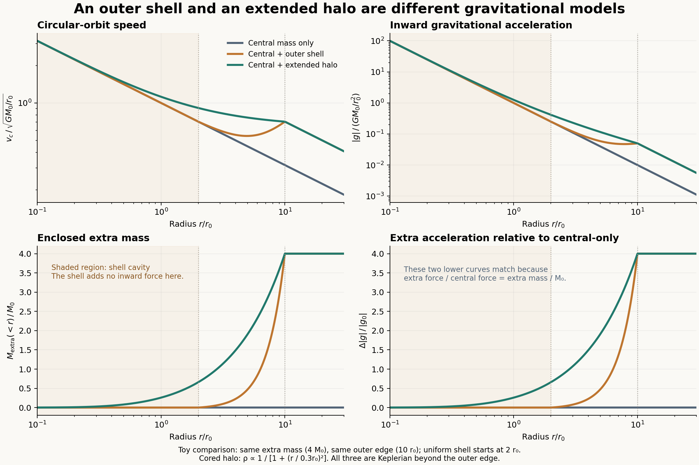
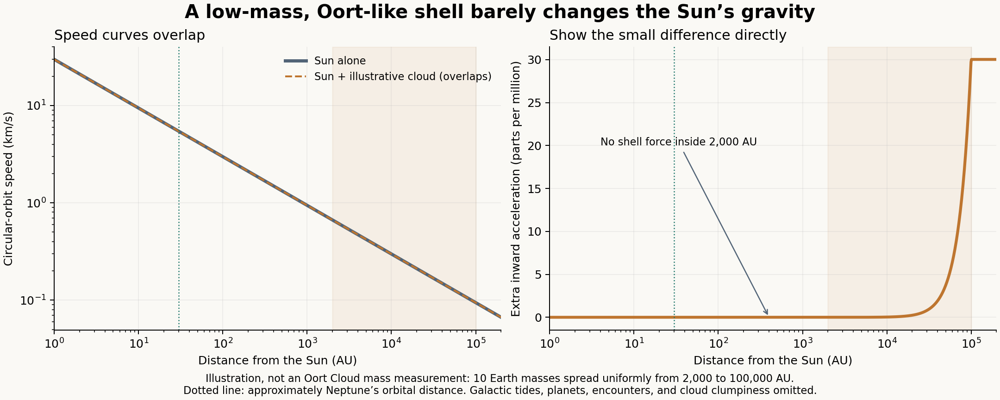

01 · Central mass alone
A point mass at the center. Farther circular orbits move more slowly: speed falls as the inverse square root of radius.
An outer cloud and a galactic halo look like relatives. Give them the same mass, place that mass differently, and their gravitational predictions tell different stories.
This is a toy-model comparison. It explores Newtonian gravity under exact spherical symmetry. It is not a Milky Way data fit, an Oort Cloud measurement, or a discovery about dark matter’s composition.
Our second experiment compares a published rotation curve with stars, gas, and a fitted halo.
A point mass at the center. Farther circular orbits move more slowly: speed falls as the inverse square root of radius.
Spread extra mass uniformly between radii 2 and 10. Its hollow center contains none of that extra mass. The surrounding shell’s pulls cancel inside the cavity.
Distribute the same extra mass from the center out to radius 10, with a smooth core. Some halo mass lies inside each orbit and adds inward acceleration.
We use dimensionless units: the central mass, radius unit, and gravitational constant are all 1. Both extended models contain 4 units of extra mass. That deliberately large amount makes the effect of distribution visible; it is not an assumed Oort Cloud mass.

In a spherical system, only the mass inside the orbit contributes to its inward gravitational acceleration. Matter outside that radius produces cancelling pulls. The equations give:
The halo density is proportional to 1 / [1 + (r/a)²], with core radius a = 0.3. Outside its core, it approaches an inverse-square density profile. That makes enclosed halo mass grow approximately with radius and can flatten the circular-speed curve where the halo dominates.
A flat curve is not automatic: the central mass, the halo’s core, and its outer cutoff matter. Our modeled curve is not exactly flat.
Zero net force is not zero gravitational potential. The shell contributes a constant potential inside its cavity. It can change escape energy even though it does not change local acceleration there.
| Radius | Central only | With shell | With halo |
|---|---|---|---|
| 0.5 | 1.4142 | 1.4142 | 1.4697 |
| 1 | 1.0000 | 1.0000 | 1.1218 |
| 2 | 0.7071 | 0.7071 | 0.9110 |
| 5 | 0.4472 | 0.5425 | 0.7625 |
| 10 | 0.3162 | 0.7071 | 0.7071 |
| 20 | 0.2236 | 0.5000 | 0.5000 |
Now choose a Sun of one solar mass and an assumed cloud mass of ten Earth masses, uniformly spread from 2,000 to 100,000 astronomical units. These boundaries illustrate the broad, uncertain extent discussed by NASA. Ten Earth masses is a demonstration parameter, not a measured cloud mass.
In this model, the cloud’s maximum additional inward acceleration is approximately 30 parts per million relative to the Sun alone: about 0.003%. Inside its cavity, the cloud adds exactly zero net force. The circular-speed curves nearly overlap.

The Oort Cloud analogy is useful for asking about an extended population around a central system. It does not make a hollow outer shell and an extended halo gravitationally interchangeable.
Geometry alone cannot identify composition: ordinary matter and hypothetical dark matter with identical density distributions have the same Newtonian gravitational field.
Our second experiment now replaces the central point mass with a disk-and-bulge model and compares its predictions with published stellar-motion measurements. The Sun-centered shell here also differs from the ambient Galactic halo through which our Solar System moves.
The checks passed: mass normalization, monotonic enclosed mass, the circular-force relation, and numerical integration of the halo density. An independent vector-force integration over a thin shell also confirmed force cancellation inside and point-mass behavior outside.